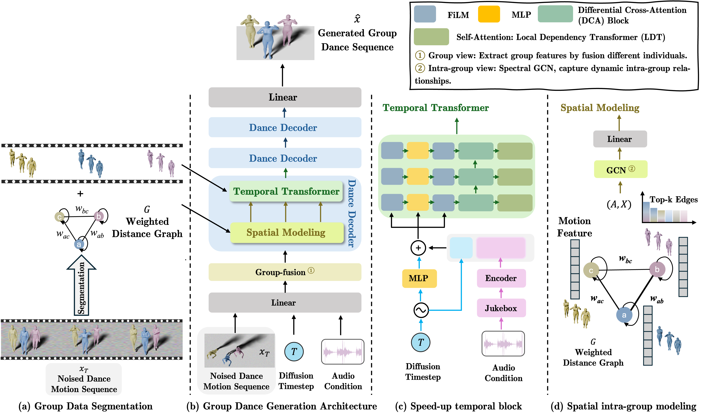

Our framework comprises two core components: the Spatial Modeling Block (SMB) and the Temporal Dependency Module (TDM). To reduce computational burden while ensuring realistic coordination, we first employ SMB to capture inter-dancer spatial relations through a lightweight graph convolutional network (GCN), which models spatial distances and suppresses collisions. This enables the model to learn structured formations and avoid dancer ambiguity. Then, TDM leverages a hybrid attention design combining Local Dependency Transformer (LDT) and Differential Attention to efficiently model temporal dynamics across extended sequences. These modules operate in a decoupled manner, with spatial features guiding formation consistency and temporal features ensuring motion coherence. Together, they enable scalable and collision-free group choreography generation.
 Paper
Paper
 Code
Code